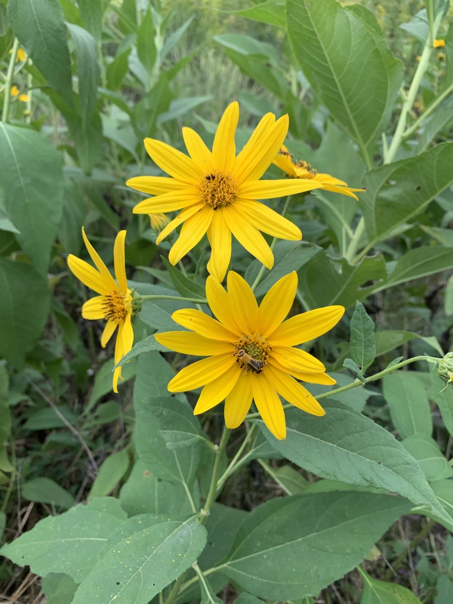

农作物与经济植物 · 植物界
菊芋 Helianthus tuberosus

菊芋的地下块茎富含菊糖，可腌制、炒食和制菊粉，耐寒耐瘠薄，是兼具食用、饲用和能源用途的作物。
- 分类
- 门被子植物门纲双子叶植物纲目菊目科菊科属向日葵属
- 栖息环境
- 田边、路旁、荒地及菜园，耐寒耐旱、适应性强
- 地理分布
- 原产北美洲，现全球温带地区广泛栽培；中国南北均有种植或逸生
- 保护级别
- 暂无评估（栽培作物；逸生种群需注意控制）
物种志
菊芋是菊科向日葵属的多年生草本，株高 1.5–3 m，茎直立粗壮、被短毛。叶片互生、卵形、边缘具锯齿，表面粗糙；秋季开黄色头状花序，形似小型向日葵。地下匍匐茎末端膨大成不规则块茎，皮色白、红或紫，肉白色，富含菊糖，因此又称洋姜。
菊芋原产北美洲，17 世纪传入欧洲，后经海路进入中国，如今南北各地都有栽培或逸生。它耐寒、耐旱、耐瘠薄，对土壤要求不高，块茎在冻土中也能越冬。块茎可腌制、炒食、煮食或提取菊粉，菊粉是天然的益生元与低热量甜味剂；茎叶可作饲料，块茎也可发酵生产乙醇，被视为潜在的能源作物。栽培上以块茎繁殖为主，繁殖力极强，逸生后较难清除，种植时需注意控制范围。
形态与习性
- 株高1.5–3 m，茎直立粗壮
- 花期8–10 月，头状花序黄色
- 块茎不规则，皮白/红/紫，肉白色，富含菊糖
- 光照喜光，也耐半阴
- 土壤不择土壤，耐瘠薄，忌积水
- 繁殖块茎繁殖，繁殖力极强
- 用途腌制、炒食、制菊粉、饲料、能源
趣味知识
- 菊芋的块茎富含菊糖，菊糖是天然益生元，热量低、甜度柔和。
- 它原产北美洲，经欧洲传入中国，块茎形似生姜，故称洋姜。
- 菊芋耐寒，块茎埋在冻土中也能安全越冬，来年重新萌发。
- 它的繁殖力极强，一旦逸生很难彻底清除，种植需设边界。